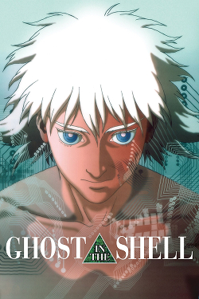
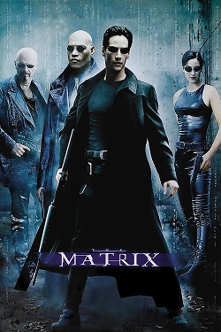

First Course: The System
Ghost in the Shell & The Matrix
Before there was "the Matrix," there was the "Ghost." This double feature lays the groundwork, boldly asking us to question the fabric of our existence.
Ghost in the Shell


 95%
calendar_today
schedule1h 25m
theatersTV-MA
95%
calendar_today
schedule1h 25m
theatersTV-MA
movieDirected by Mamoru Oshii
IT FOUND A VOICE… NOW IT NEEDS A BODY.

The Matrix
 83%
calendar_today
schedule2h 16m
theatersR
83%
calendar_today
schedule2h 16m
theatersR
movieDirected by the Wachowskis
BELIEVE THE UNBELIEVABLE.


Mamoru Oshii's Ghost in the Shell is a cyberpunk classic. Set in a future where minds can be "hacked" and bodies are fully replaceable, it follows Major Motoko Kusanagi, a cyborg agent, as she hunts a mysterious hacker. But the real chase is about her own identity, as the film digs into what it means to be human when your "self" or "ghost" can be copied or exist outside a physical body. Its blend of breathtaking animation, deep thinking, and sleek, tactical action set a new global standard.
The Wachowskis were so profoundly influenced that they reportedly pitched The Matrix to producers by showing them Ghost in the Shell and saying, "We want to do that, but in live-action." You'll see its DNA everywhere: from the green "digital rain" code to the direct plug-in ports in the back of the neck.